Préparé par Orem pour [Client]
Octobre 2026
Un site qui reflète le niveau réel de l’entreprise, explique mieux l’offre et transforme davantage de visites en demandes.
Le sujet n’est pas de créer de la valeur à partir de zéro, mais d’exploiter celle qui existe déjà.
L’entreprise bénéficie d’une vraie notoriété et d’un savoir-faire identifié.
Le site n’est pas une vitrine : il génère des visites et des demandes.
Structure, contenus et parcours ne convertissent pas encore ce trafic.
Il génère des demandes. Il sous-exploite simplement son potentiel.
Il doit attirer, rassurer, orienter et convertir.
Source : statistiques du site et données de vente, octobre 2026.
Il y a déjà du trafic et des ventes. Il reste une marge importante entre la situation actuelle et le potentiel.
Plus de bonnes personnes arrivent sur le site, et une plus grande part d’entre elles passe à l’action.
Sur des requêtes à intention réelle, au-delà du nom de marque.
Plus de visiteurs qui cherchent exactement ce que vous proposez.
Le trafic seul ne suffit pas : chaque visite doit avoir plus de chances d’aboutir.
Plus de demandes, à trafic égal.
On ne refond pas le site pour qu’il soit seulement plus beau. On le refond pour qu’il soit plus visible, plus crédible et plus convaincant.
Le site n’est pas livré puis laissé.
On ne vend pas quelques mises à jour. On vend une logique d’évolution continue.
L’idée n’est pas de fonctionner « au coup par coup » à chaque micro-besoin.
Chaque mois, le même cadre de travail :
Nous ne pouvons pas garantir un résultat à l’euro près, et ce serait malhonnête de le prétendre. Voici une lecture réaliste du potentiel.
Ce chiffre n’est pas une promesse contractuelle. C’est une projection prudente.
Un cadrage précis au départ et des livrables validés à chaque étape : moins d’allers-retours, une mise en ligne sans compromis.
CLIENT
Un cabinet premium avec une vraie réputation, mais un site trop standard pour son niveau réel.
Ce cas montre que nous savons élever le niveau perçu d’un site sans perdre le capital existant.
Le sujet n’était pas de créer une image, mais de remettre le site à son niveau, sans perdre la performance existante.
soit 6 900 € TTC
Un prix forfaitaire, sur le périmètre décrit. Aucun coût caché.
Échelonnement possible si besoin.
Chaque mois, nous intervenons autant sur votre image que sur votre site.
HT / mois
“Un grand merci pour la créativité et l’expertise. Le site est exactement à notre image.”
Prénom Nom
Fonction, Entreprise
“Une équipe à l’écoute, réactive et rigoureuse du début à la fin.”
Prénom Nom
Fonction, Entreprise
“Un travail de qualité, des délais tenus et un vrai sens du conseil.”
Prénom Nom
Fonction, Entreprise
“Leur professionnalisme a fait toute la différence sur notre lancement.”
Prénom Nom
Fonction, Entreprise
“Un choix efficace et créatif. Exactement ce dont nous avions besoin.”
Prénom Nom
Fonction, Entreprise
“Une prestation remarquablement organisée et un résultat au-delà des attentes.”
Prénom Nom
Fonction, Entreprise
Ce ne serait pas honnête.
Si la réponse est oui, cette refonte a du sens dès maintenant.

Chaque mois, nous lisons les priorités avec vous, décidons quoi faire et l’exécutons.
En 30 minutes, nous reprenons vos chiffres, les hypothèses et le périmètre. Vous décidez ensuite en connaissance de cause.
Réserver un appel de 30 minutesScannez pour réserver
votre créneau directement
dans notre agenda.
Louis Montagne
Cofondateur, votre interlocuteur
louis@agence-orem.fr
07 50 37 15 72
Théophile Lamouret
Cofondateur
theophile@agence-orem.fr
07 71 67 39 47
agence-orem.fr · Orem, marque d’ICONOKOM